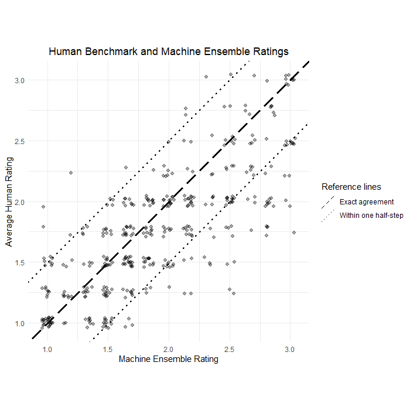
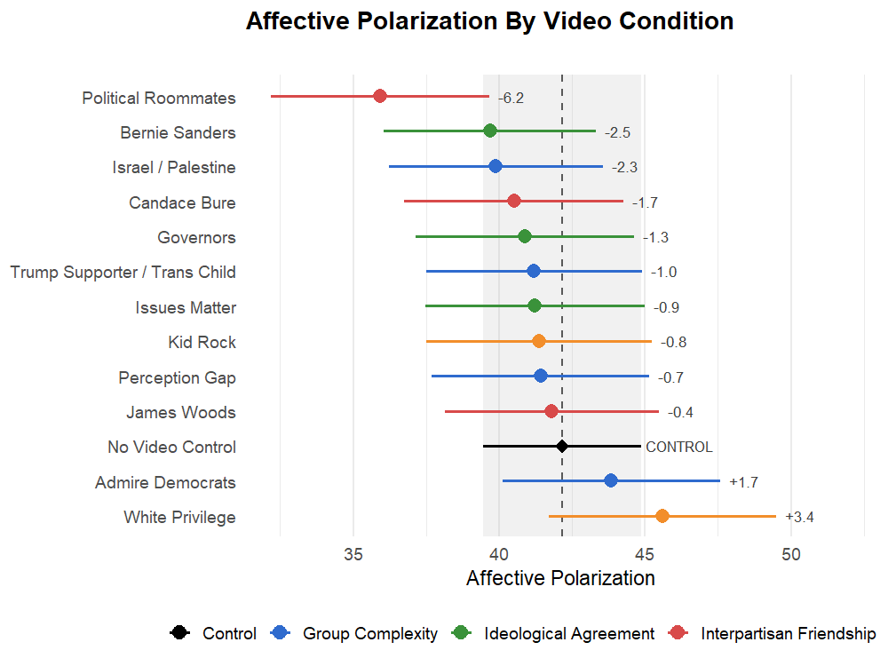

Political Scientist
Donny Snyder
Postdoctoral Research Fellow
Wesleyan Media Project
I study political communication and political psychology, with a particular focus on text-as-data, artificial intelligence, and quantitative methods.
About
I am a Postdoctoral Research Fellow at the Wesleyan Media Project. My research examines how people encounter, interpret, and respond to political information, especially in the contexts of political communication and political psychology.
I earned my Ph.D. in Political Science from the University of Massachusetts, Amherst and my B.S. in Psychology from Purdue University. My dissertation examined how individuals clarify the political landscape and make it personal, and what those processes may mean for polarization and political group attachment.
My work uses artificial intelligence and computational text analysis to characterize the media ecosystem, track the salience of politics in everyday interactions, and operationalize new constructs in text data. I also use survey experiments and conjoint designs to study political identities and develop interventions addressing affective polarization.
During graduate school, I was supported by the National Science Foundation Graduate Research Fellowship Program (NSF GRFP) and worked with the UMass Amherst Poll.
Research
Political communication & media
How campaigns, media environments, and political messages shape what people notice, understand, and believe.
Text-as-data & artificial intelligence
Using computational text analysis and machine learning to measure political language and media content at scale.

Political psychology & polarization
How identity, political cues, and social interactions shape partisan attachment, attitudes, and affective polarization.

Publications
Published & Accepted
- Snyder D & Pierce C. (2026). “Measuring Judicial Appeasement of the United States Supreme Court.” American Politics Research. Published.
- Snyder D. (2026). “The Weight of Words: Applying Concreteness to Elite Media Political Language.” PLOS One. R&R.
- Kirshbaum S, Brake S, Cuthbert L, Eichen A, La Raja R, Mohanty J, Nteta T, Rhodes J, Snyder D, & Theodoridis A. (2024). “The 2024 U.S. Presidential Election: Public Opinion on the Economy and Immigration Helped Return Trump to the White House, but with No Clear Policy Mandate.” The Forum, 22(2–3), 343–368. Published.
Under Review
- Snyder D. “Sir, This Is a Wendy’s: Measuring Political Contact Through Yelp Business Reviews.” Under Review.
- Snyder D. “There’s a Lot to Unpack There: Personalization in Political Language and Affective Polarization.” Under Review.
- Filindra A, Nickerson D, Sands M, Snyder D, & Theodoridis A. “When Fear Chills Democracy: Do Permissive Gun Laws Hinder Poll Worker Recruitment?” Under Review.
Works in Progress
- Snyder D, Brake S, & Theodoridis A. “Congressional Affective Polarization.” In Preparation.
- Snyder D & Hennes EP. “Cue Clarity and Identity Alignment: Rethinking Political Sophistication through Individual Variations in Affective Polarization.” In Preparation.
- Snyder D, Intawan C, & Theodoridis A. “Does Democrat = Feminine and Republican = Masculine? Increasingly, Yes.” In Preparation.
- Snyder D, Jett J, & Hennes EP. “Bread and Circuses: Structural Linguistic Features Associated with Media Engagement and the Case of Breitbart.” In Preparation.
- Snyder D, Jett J, & Hennes EP. “Breitbart Article Metadata, 2007–2024: Linking News Production, Engagement, and Misinformation.” In Preparation.
- McKenzie N, Snyder D, Tropp L, Hennes EP, Stathi S, & Guerra R. “How Varying the Tone of Political Disagreement Shapes Cross-Partisan Attitudes and Relations.” In Preparation.
- Nicholson S, Snyder D, Lamberth T, & Theodoridis A. “Justifying the Means: Partisan Consequentialism and Widespread Differentially Permissive Attitudes Toward Political Violence.” In Preparation.